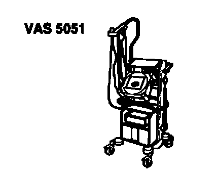
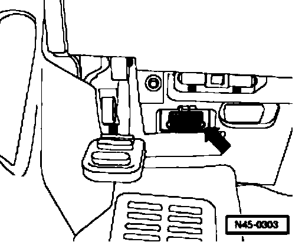
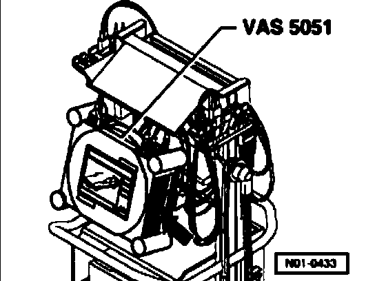

Initial Inspection and Diagnostic Overview
VAS5051, connecting and selecting functions
VAS5051, connecting
Special tools, testers and auxiliary items required

^ Vehicle diagnostic, testing, and information system VAS5051
^ Diagnostic cable VAS5051/1 or Diagnostic cable VAS5051/3
Caution!
^ During a test drive you must always secure testing and measuring equipment on the back seat
^ These devices may only be operated by a passenger during a test drive.

- Connect diagnostic cable VAS5051/1 or VAS5051/3 into the vehicle diagnostic connection.

- Switch on tester - arrow -.
The tester is operational when it displays the keys of operating modes.
- Switch on ignition.
- Touch button/field for "Guided Fault Finding" on screen
- Select one after another:
^ Brand
^ Model
^ Model year
^ Version
^ Engine code
- Confirm data entered.
Wait until tester has interrogated all control modules in vehicle.
- Press the "Go to" button and select "Function/component selection" function.
Follow information given on screen to start desired functions.